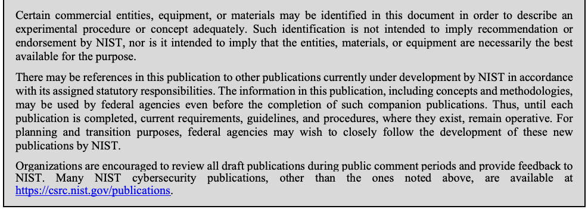
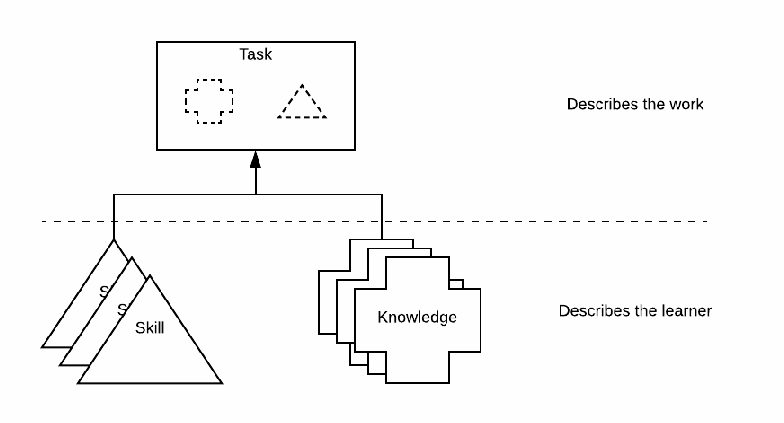
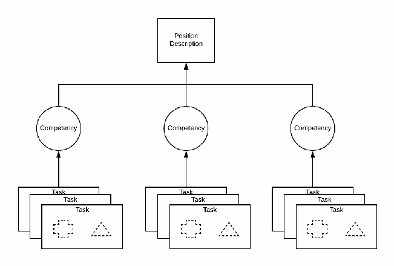
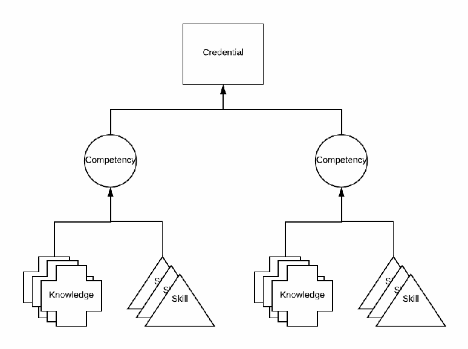
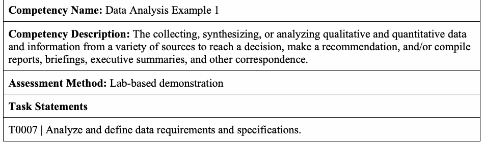
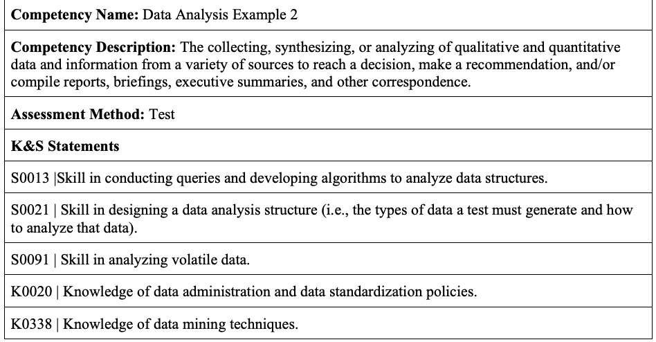
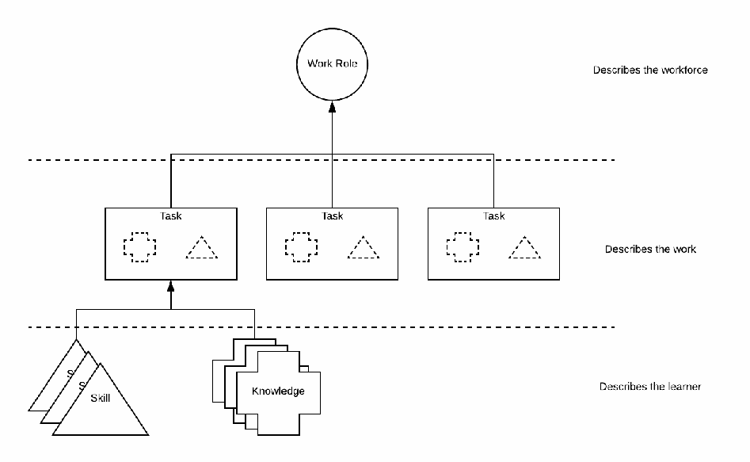
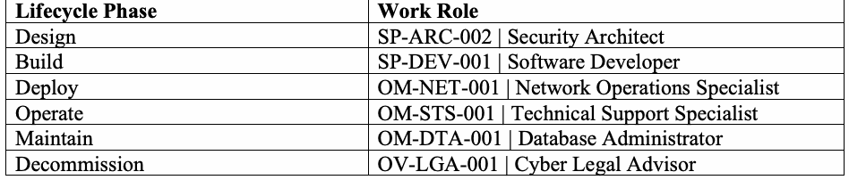
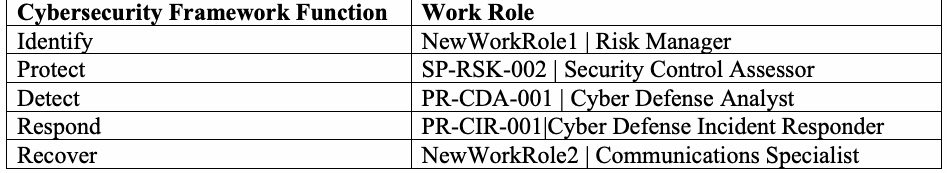

NIST Special Publication · PDF 原文抽出
Workforce Framework for Cybersecurity (NICE Framework)
サイバーセキュリティ人材フレームワーク（NICEフレームワーク）
NIST SP 800-181 Rev. 1（Workforce Framework for Cybersecurity (NICE Framework)）の英文と日本語訳を段落ごとに並べた閲覧用ページです。サイバーセキュリティ業務を記述・共有する共通の参照枠組みを示し、タスク、知識、スキルの記述を通じて学習、採用、育成、職務設計を支援します。 翻訳は非公式です。要件の確認にはNIST の正式版 PDFを参照してください。
PDF から抽出した原文は原本との照合待ちです。
PDF p.14: 原本を画像確認。左欄本文と右欄のKnowledge/Skill説明ボックスの文章・箇条書きが、座標順に交互または断片的に抽出されている。原文HTMLの読み順は抽出どおり維持し、日本語訳は文脈から本文と説明ボックスを識別して翻訳する。抽出原文はneeds_reviewのまま。
PDF p.13: 原本を画像確認。左欄本文と右欄のTask定義・Task Statements箇条書きが座標順に交互または一つのブロック内に混在抽出されている。日本語訳は本文と説明ボックスを文脈から識別し、重複断片はsource_onlyで記録。抽出原文はneeds_reviewのまま。
PDF p.16: 原本を画像確認。左欄本文と右欄のCompetency定義・特性ボックスが座標順に交互または一つのブロック内に混在抽出されている。日本語訳は本文およびボックスを文脈で識別し、重複断片をsource_onlyで記録。原文抽出はneeds_reviewのまま。
NIST Special Publication 800-181
NIST特別刊行物800-181
Revision 1
改訂第1版
Workforce Framework
人材フレームワーク
for Cybersecurity (NICE Framework)
サイバーセキュリティ向け（NICEフレームワーク）
Rodney Petersen Danielle Santos Matthew C. Smith Karen A. Wetzel Greg Witte
Rodney Petersen、Danielle Santos、Matthew C. Smith、Karen A. Wetzel、Greg Witte
This publication is available free of charge from: https://doi.org/10.6028/NIST.SP.800-181r1
本刊行物は以下から無料で入手できる：https://doi.org/10.6028/NIST.SP.800-181r1
NIST Special Publication 800-181
NIST特別刊行物800-181
Revision 1
改訂第1版
Workforce Framework
人材フレームワーク
for Cybersecurity (NICE Framework)
サイバーセキュリティ向け（NICEフレームワーク）
Rodney Petersen (Director)
Rodney Petersen（ディレクター）
Danielle Santos (Manager of Communications and Operations) Karen A. Wetzel (Manager of the NICE Framework) National Initiative for Cybersecurity Education (NICE)
Danielle Santos（広報・運営マネージャー）、Karen A. Wetzel（NICEフレームワーク・マネージャー）、全米サイバーセキュリティ教育イニシアチブ（NICE）
Applied Cybersecurity Division Information Technology Laboratory
応用サイバーセキュリティ部門 情報技術研究所
Matthew C. Smith Greg Witte
Matthew C. Smith、Greg Witte
Huntington Ingalls Industries Annapolis Junction, MD
Huntington Ingalls Industries、メリーランド州アナポリス・ジャンクション
This publication is available free of charge from: https://doi.org/10.6028/NIST.SP.800-181r1
本刊行物は以下から無料で入手できる：https://doi.org/10.6028/NIST.SP.800-181r1
November 2020
2020年11月
U.S. Department of Commerce Wilbur L. Ross, Jr., Secretary
米国商務省 ウィルバー・L・ロス・ジュニア長官
National Institute of Standards and Technology
米国国立標準技術研究所
Walter Copan, NIST Director and Under Secretary of Commerce for Standards and Technology
Walter Copan、NIST所長兼商務省標準技術担当次官
Authority
法的権限
This publication has been developed by NIST in accordance with its statutory responsibilities under the Federal Information Security Modernization Act (FISMA) of 2014, 44 U.S.C. § 3551 et seq., Public Law (P.L.) 113-283. NIST is responsible for developing information security standards and guidelines, including minimum requirements for federal information systems, but such standards and guidelines shall not apply to national security systems without the express approval of appropriate federal officials exercising policy authority over such systems. This guideline is consistent with the requirements of the Office of Management and Budget (OMB) Circular A-130.
本刊行物は、2014年連邦情報セキュリティ近代化法（FISMA）（44 U.S.C. § 3551以下、公法（P.L.）113-283）に基づく法定責任に従ってNISTが作成した。NISTは、連邦情報システムの最低要件を含む情報セキュリティ標準およびガイドラインを策定する責任を負う。ただし、これらの標準およびガイドラインは、国家安全保障システムに対する政策権限を行使する適切な連邦当局者の明示的な承認がない限り、当該システムには適用されない。本ガイドラインは行政管理予算局（OMB）通達A-130の要件に適合している。
Nothing in this publication should be taken to contradict the standards and guidelines made mandatory and binding on federal agencies by the Secretary of Commerce under statutory authority. Nor should these guidelines be interpreted as altering or superseding the existing authorities of the Secretary of Commerce, Director of the OMB, or any other federal official. This publication may be used by nongovernmental organizations on a voluntary basis and is not subject to copyright in the United States. Attribution would, however, be appreciated by NIST.
本刊行物のいかなる記述も、法的権限に基づき商務長官が連邦機関に義務付け、拘束力を持たせた標準およびガイドラインと矛盾すると解釈すべきではない。また、本ガイドラインを、商務長官、OMB長官、またはその他の連邦当局者の既存権限を変更または置き換えるものと解釈すべきではない。本刊行物は非政府組織が任意に利用でき、米国では著作権の対象ではない。ただし、NISTは出典の明記を歓迎する。
National Institute of Standards and Technology Special Publication 800-181 Natl. Inst. Stand. Technol. Spec. Publ. 800-181 Rev. 1, 27 pages (November 2020) CODEN: NSPUE2
米国国立標準技術研究所 特別刊行物800-181 Natl. Inst. Stand. Technol. Spec. Publ. 800-181 Rev. 1、27ページ（2020年11月） CODEN: NSPUE2
This publication is available free of charge from: https://doi.org/10.6028/NIST.SP.800-181r1
本刊行物は以下から無料で入手できる：https://doi.org/10.6028/NIST.SP.800-181r1
Certain commercial entities, equipment, or materials may be identified in this document in order to describe an experimental procedure or concept adequately. Such identification is not intended to imply recommendation or endorsement by NIST, nor is it intended to imply that the entities, materials, or equipment are necessarily the best available for the purpose.
There may be references in this publication to other publications currently under development by NIST in accordance with its assigned statutory responsibilities. The information in this publication, including concepts and methodologies, may be used by federal agencies even before the completion of such companion publications. Thus, until each publication is completed, current requirements, guidelines, and procedures, where they exist, remain operative. For planning and transition purposes, federal agencies may wish to closely follow the development of these new publications by NIST.
Organizations are encouraged to review all draft publications during public comment periods and provide feedback to NIST. Many NIST cybersecurity publications, other than the ones noted above, are available at https://csrc.nist.gov/publications.
原本PDFの抜粋画像

本刊行物では、実験手順や概念を十分に説明するため、特定の商業組織、機器、または材料を特定することがある。こうした特定は、NISTによる推奨もしくは承認を意味するものではなく、当該組織、材料、または機器が目的に対して必ずしも入手可能な最良のものであることを意味するものでもない。
本刊行物では、NISTが付与された法定責任に従って現在作成中の他の刊行物に言及することがある。そうした関連刊行物が完成する前でも、連邦機関は本刊行物に記載された情報（概念や方法論を含む）を利用できる。したがって、各刊行物が完成するまでは、現行の要件、ガイドライン、および手順が存在する場合、それらが引き続き有効である。計画および移行のため、連邦機関はNISTによるこれらの新刊行物の策定状況を注視するとよい。
組織には、パブリックコメント期間中にすべての草案刊行物を確認し、NISTに意見を提出することが推奨される。上記以外の多くのNISTサイバーセキュリティ刊行物は、https://csrc.nist.gov/publications から入手できる。
Comments on this publication may be submitted to: National Institute of Standards and Technology Attn: Applied Cybersecurity Division, Information Technology Laboratory 100 Bureau Drive (Mail Stop 2000) Gaithersburg, MD 20899-2000 Email: NICEFramework@nist.gov
本刊行物に関する意見は、以下に提出できる：米国国立標準技術研究所、宛先：応用サイバーセキュリティ部門、情報技術研究所、100 Bureau Drive（Mail Stop 2000）、メリーランド州ゲイザースバーグ 20899-2000、電子メール：NICEFramework@nist.gov
All comments are subject to release under the Freedom of Information Act (FOIA).
すべての意見は、情報公開法（FOIA）に基づく公開の対象となる。
Reports on Computer Systems Technology
コンピューターシステム技術に関する報告書
The Information Technology Laboratory (ITL) at the National Institute of Standards and Technology (NIST) promotes the U.S. economy and public welfare by providing technical leadership for the Nation’s measurement and standards infrastructure. ITL develops tests, test methods, reference data, proof of concept implementations, and technical analyses to advance the development and productive use of information technology. ITL’s responsibilities include the development of management, administrative, technical, and physical standards and guidelines for the cost-effective security and privacy of other than national security-related information in federal information systems. The Special Publication 800-series reports on ITL’s research, guidelines, and outreach efforts in information system security, and its collaborative activities with industry, government, and academic organizations.
米国国立標準技術研究所（NIST）の情報技術研究所（ITL）は、米国の計量・標準基盤に技術的なリーダーシップを提供することにより、米国経済と公共の福祉を促進している。ITLは、情報技術の開発と生産的な利用を推進するため、テスト、テスト方法、参照データ、概念実証の実装、および技術分析を開発する。ITLの責任には、連邦情報システムにおける国家安全保障関連以外の情報の費用対効果に優れたセキュリティとプライバシーのための、マネジメント上、事務管理上、技術上、および物理上の標準とガイドラインの策定が含まれる。特別刊行物800シリーズは、情報システムのセキュリティに関するITLの研究、ガイドライン、普及活動、および産業界、政府、学術機関との協力活動を報告する。
Abstract
概要
This publication from the National Initiative for Cybersecurity Education (NICE) describes the Workforce Framework for Cybersecurity (NICE Framework), a fundamental reference for describing and sharing information about cybersecurity work. It expresses that work as Task statements and describes Knowledge and Skill statements that provide a foundation for learners including students, job seekers, and employees. The use of these statements helps students to develop skills, job seekers to demonstrate competencies, and employees to accomplish tasks. As a common, consistent lexicon that categorizes and describes cybersecurity work, the NICE Framework improves communication about how to identify, recruit, develop, and retain cybersecurity talent. The NICE Framework is a reference source from which organizations or sectors can develop additional publications or tools that meet their needs to define or provide guidance on different aspects of cybersecurity education, training, and workforce development.
全米サイバーセキュリティ教育イニシアチブ（NICE）が作成した本刊行物は、サイバーセキュリティ業務を記述し、その情報を共有するための基本的な参照資料であるサイバーセキュリティ人材フレームワーク（NICEフレームワーク）を説明する。このフレームワークは、その業務をタスク記述として表し、学生、求職者、従業員などの学習者の基盤となる知識記述およびスキル記述を説明する。これらの記述を用いることで、学生はスキルを身に付け、求職者はコンピテンシーを示し、従業員はタスクを遂行しやすくなる。サイバーセキュリティ業務を分類・記述する共通かつ一貫した語彙として、NICEフレームワークは、サイバーセキュリティ人材をどのように特定、採用、育成、および定着させるかに関するコミュニケーションを改善する。NICEフレームワークは、組織や分野が、サイバーセキュリティ教育、訓練、人材育成のさまざまな側面を定義したり、それらに関する指針を示したりするという自らのニーズを満たす追加の刊行物やツールを開発する際の参照元となる。
Keywords
キーワード
Competency; cybersecurity; cyberspace; education; knowledge; role; security; skill; task; team; training; workforce; work role.
コンピテンシー、サイバーセキュリティ、サイバースペース、教育、知識、役割、セキュリティ、スキル、タスク、チーム、訓練、人材、職務上の役割。
Patent Disclosure Notice
特許開示に関する通知
NOTICE: The Information Technology Laboratory (ITL) has requested that holders of patent claims whose use may be required for compliance with the guidance or requirements of this publication disclose such patent claims to ITL. However, holders of patents are not obligated to respond to ITL calls for patents and ITL has not undertaken a patent search in order to identify which, if any, patents may apply to this publication.
通知：情報技術研究所（ITL）は、本刊行物のガイダンスまたは要件を遵守するために使用が必要となる可能性のある特許請求の保有者に対し、当該特許請求をITLに開示するよう求めている。ただし、特許保有者にITLによる特許の募集に応じる義務はなく、ITLは、本刊行物に適用される可能性のある特許があるとしてそれがどれであるかを特定するための特許調査を実施していない。
As of the date of publication and following call(s) for the identification of patent claims whose use may be required for compliance with the guidance or requirements of this publication, no such patent claims have been identified to ITL.
刊行日時点で、本刊行物のガイダンスまたは要件を遵守するために使用が必要となる可能性のある特許請求の特定を求める呼びかけを行った後も、そのような特許請求はITLに対して特定されていない。
No representation is made or implied by ITL that licenses are not required to avoid patent infringement in the use of this publication.
本刊行物の利用にあたって特許侵害を避けるためのライセンスが不要であると、ITLが表明または示唆するものではない。
Document Conventions
文書の表記規則
The terms “shall” and “shall not” indicate requirements to be followed strictly in order to conform to the publication and from which no deviation is permitted. The terms “should” and “should not” indicate that among several possibilities one is recommended as particularly suitable, without mentioning or excluding others, or that a certain course of action is preferred but not necessarily required, or that (in the negative form) a certain possibility or course of action is discouraged but not prohibited. The terms “may” and “need not” indicate a course of action permissible within the limits of the publication. The terms “can” and “cannot” indicate a possibility and capability, whether material, physical or causal.
「shall」および「shall not」は、本刊行物に適合するために厳格に従うべきであり、逸脱が一切認められない要件を示す。「should」および「should not」は、複数の可能性の中から、他のものに言及することも排除することもなく、特に適切なものとして一つが推奨されること、ある行動方針が望ましいが必ずしも必須ではないこと、または（否定形では）ある可能性や行動方針が推奨されないが禁止はされないことを示す。「may」および「need not」は、本刊行物の範囲内で許容される行動方針を示す。「can」および「cannot」は、物質的、物理的、因果的のいずれであるかを問わず、可能性および能力を示す。
Throughout the NICE Framework, those performing cybersecurity work—including students, job seekers, and employees—are referenced as Learners. This moniker highlights that each member of the workforce is also a lifelong learner.
NICEフレームワークでは、学生、求職者、従業員など、サイバーセキュリティ業務を担う人々を「学習者」と呼ぶ。この呼称は、労働力を構成するすべての人が生涯にわたり学ぶことを強調している。
Acknowledgments
謝辞
The NICE Framework was developed by a Core Authoring Team that includes representatives from numerous departments and agencies in the United States federal government. The National Institute of Standards and Technology wishes to acknowledge and thank these team members whose dedicated efforts contributed significantly to the publication:
NICEフレームワークは、米国連邦政府の多数の省庁および機関の代表者を含む中核執筆チームが作成した。米国国立標準技術研究所は、本刊行物に多大な貢献をしたチームメンバーの尽力に謝意を表し、感謝する。
William Newhouse, National Institute of Standards and Technology
Pam Frugoli, Department of Labor
Lisa Dorr, Department of Homeland Security
Kenneth Vrooman, Cybersecurity and Infrastructure Security Agency
Bobbie Sanders, Department of Defense
Patrick Johnson, Department of Defense
Matt Isnor, Department of Defense
Stephanie Shively, Department of Defense
Ryan Farr, Department of Defense
原本PDFの抜粋画像
William Newhouse（米国国立標準技術研究所）
Pam Frugoli（労働省）
Lisa Dorr（国土安全保障省）
Kenneth Vrooman（サイバーセキュリティ・インフラストラクチャ安全保障庁）
Bobbie Sanders（国防総省）
Patrick Johnson（国防総省）
Matt Isnor（国防総省）
Stephanie Shively（国防総省）
Ryan Farr（国防総省）
The authors and the Core Authoring Team gratefully acknowledge and appreciate the significant contributions from individuals and organizations in the public and private sectors whose thoughtful and constructive comments improved the overall quality, thoroughness, and usefulness of this publication. The authors particularly appreciate the many helpful responses to the NICE Framework Request for Comments and to the public comment draft of this publication.
著者および中核執筆チームは、思慮深く建設的な意見によって本刊行物の全体的な品質、網羅性、および有用性を向上させた、官民の個人や組織からの多大な貢献に深く感謝する。著者は特に、NICEフレームワークに関する意見募集および本刊行物のパブリックコメント草案に寄せられた多くの有益な回答に謝意を表する。
Additionally, the team appreciates and acknowledges the contributions of those who established previous editions of national cybersecurity workforce frameworks as described at the History page of the NICE Framework Resource Center. [1]
さらにチームは、NICEフレームワークリソースセンターの履歴ページに記載された、過去の国家サイバーセキュリティ人材フレームワークの各版を作成した関係者の貢献に謝意を表する。［1］
Note to Readers
読者への注記
Welcome to the National Initiative for Cybersecurity Education (NICE) Workforce Framework for Cybersecurity (NICE Framework), Revision 1. The NICE Program Office staff have received significant feedback from the community, including many responses to a recent request for general comments regarding the NICE Framework and also responses to the public draft of this publication. In light of that feedback and the fast-paced and connected ecosystem of cybersecurity, the authoring team decided to adopt and promote attributes of agility, flexibility, interoperability, and modularity. These attributes led to a refactoring of the NICE Framework to provide a streamlined approach for developing a workforce to manage cybersecurity risk. Below is a summary of changes:
全米サイバーセキュリティ教育イニシアチブ（NICE）の「サイバーセキュリティ人材フレームワーク（NICEフレームワーク）」改訂第1版へようこそ。NICEプログラムオフィスの職員は、NICEフレームワーク全般に関する最近の意見募集への多くの回答や本刊行物の公開草案への回答を含め、コミュニティから多くの意見を受け取った。こうした意見と、急速に変化し相互接続されたサイバーセキュリティのエコシステムを踏まえ、執筆チームは俊敏性、柔軟性、相互運用性、およびモジュール性という属性を取り入れ、促進することを決定した。これらの属性を受けてNICEフレームワークを再構成し、サイバーセキュリティリスクを管理する人材を育成するための合理化されたアプローチを提供することとなった。以下に変更点を要約する。
•Organizing constructs in Revision 1 have been simplified by deprecating Categories (e.g., securely provision, oversee and govern, protect and defend, analyze, etc.) and Specialty Areas (e.g., incident response, threat analysis, cybersecurity management, etc.). In order to simplify an approach that offers agility, flexibility, interoperability, and modularity for organizations, Revision 1 presents a streamlined set of “building blocks” comprised of Tasks, Knowledge, and Skills. Organizations that find value in the former Categories and Specialty Areas can continue to use them or create teams around those concepts and align them with this version of the NICE Framework (see Section 3.4).
•改訂第1版では、カテゴリ（例：安全なプロビジョニング、監督・統制、保護・防御、分析など）および専門領域（例：インシデント対応、脅威分析、サイバーセキュリティ管理など）を非推奨とすることで、組織化の構成概念を簡素化した。組織に俊敏性、柔軟性、相互運用性、およびモジュール性をもたらすアプローチを簡素化するため、改訂第1版ではタスク、知識、スキルから成る合理化された一連の「構成要素」を提示する。従来のカテゴリや専門領域に価値を見いだす組織は、それらを引き続き利用したり、それらの概念を軸にチームを編成したりして、本版のNICEフレームワークと整合させることができる（3.4節を参照）。
•Revision 1 describes several uses of Tasks, Knowledge, and Skills, including methods of applying those in the creation of Work Roles. Users of the Work Roles described in the original NIST SP 800-181 may continue to use those; updates to those may be published by NICE in the future. [2]
•改訂第1版では、職務上の役割の作成にタスク、知識、スキルを適用する方法を含め、それらのいくつかの利用方法を説明する。元のNIST SP 800-181に記載された職務上の役割の利用者は、それらを引き続き利用してよい。それらの更新版は、将来NICEが公表する可能性がある。［2］
The relationships among Tasks, Knowledge, Skills, and Abilities have changed. Skill and Ability statements from the previous version have been refactored for simplicity into Skill statements, which focus on the action of the learner. This revision describes methods for associating Knowledge and Skill statements with Task statements for various outcomes. The lists of Tasks, Knowledge, Skills, and Work Roles that were previously available in Appendices A and B of the 2017 Framework have been removed from this version in order to simplify the maintenance of the NICE Framework and to ease updates to those lists. The Task, Knowledge, and Skills (TKS) statements and corresponding Competencies and Work Roles will be maintained as separate artifacts and will be subject to ongoing review and updates with a defined change process and indication of version control to manage and communicate changes. Until those updates occur, the earlier versions of these lists will remain available to users in the NICE Framework Resource Center. In support of interoperability and modularity, future updates will ensure that the statements match the final definitions of TKS statements noted here.
タスク、知識、スキル、および能力の関係が変更された。旧版のスキル記述および能力記述は、簡素化のため、学習者の行動に焦点を当てるスキル記述へと再編された。本改訂版では、さまざまな成果のために知識記述およびスキル記述をタスク記述に関連付ける方法を説明する。NICEフレームワークの保守を簡素化し、各一覧の更新を容易にするため、2017年版フレームワークの付録AおよびBに掲載されていたタスク、知識、スキル、職務上の役割の一覧は本版から削除した。タスク、知識、スキル（TKS）の記述と、それに対応するコンピテンシーおよび職務上の役割は、別個の成果物として維持し、変更を管理し伝達するために、定められた変更プロセスと版管理の表示を伴う継続的なレビューおよび更新の対象とする。それらの更新が行われるまでは、利用者はこれらの一覧の旧版をNICEフレームワークリソースセンターで引き続き入手できる。相互運用性とモジュール性を支援するため、今後の更新では、各記述が本書に記載するTKS記述の最終定義と一致するようにする。
•For readers interested in mapping standards, references, or resources to the NICE Framework, NICE is working with the Online Informative Reference (OLIR) Program to develop templates for these mappings. The OLIR Program, managed by NIST, provides a process for aligning references to NIST documents. Additionally, the program provides a catalog of those references. [3]
•標準、参照情報、またはリソースをNICEフレームワークに対応付けたい読者向けに、NICEはオンライン参考情報（OLIR）プログラムと協力し、対応付け用テンプレートを作成している。NISTが運営するOLIRプログラムは、参照情報をNIST文書に整合させるためのプロセスを提供する。また、その参照情報のカタログも提供する。［3］
Executive Summary
概要
Each of us—individually and organizationally—performs important work that provides a contribution to society. However, as information and technology, including many evolving types of operational technology, grow increasingly complex and interconnected it can be difficult to clearly describe the work that is being performed or that we desire to accomplish, in these areas in particular. The National Initiative for Cybersecurity Education (NICE) recognizes that those performing cybersecurity work—including students, job seekers, and employees— are lifelong learners throughout their efforts to emphasize and address cybersecurity implications across many domains. This segment of people is referenced in this document both as “Learners” and at times as the “cybersecurity workforce”, though the latter is not meant to imply that the work roles and content included in the NICE Framework apply only to those fully embedded in the cybersecurity domain. The tasks that these learners perform are further referenced here as “cybersecurity work”, and the Framework provides a means to describing that work with precision to support learner education or training and in the recruitment, hiring, development, and retention of employees. The NICE Framework has been developed to help provide a reference taxonomy—that is, a common language—of the cybersecurity work and of the individuals who carry out that work. The NICE Framework supports the NICE mission to energize, promote, and coordinate a robust community working together to advance an integrated ecosystem of cybersecurity education, training, and workforce development. The NICE Framework provides a set of building blocks for describing the tasks, knowledge, and skills that are needed to perform cybersecurity work performed by individuals and teams. Through these building blocks, the NICE Framework enables organizations to develop their workforces to perform cybersecurity work, and it helps learners to explore cybersecurity work and to engage in appropriate learning activities to develop their knowledge and skills. This development, in turn, benefits employers and employees through the identification of career pathways that document how to prepare for cybersecurity work using the data of Task, Knowledge, and Skill (TKS) statements bundled into Work Roles and Competencies.
私たちはそれぞれ、個人としても組織としても、社会に貢献する重要な仕事を行っている。しかし、進化を続ける多くの種類の運用技術を含め、情報と技術がますます複雑化し相互接続されるにつれて、特にこれらの分野では、実行中の仕事や達成したい仕事を明確に記述することが難しくなりうる。全米サイバーセキュリティ教育イニシアチブ（NICE）は、学生、求職者、従業員など、サイバーセキュリティ業務を担う人々が、多くの領域にわたるサイバーセキュリティ上の影響を重視し対処する取り組みを通じて、生涯にわたる学習者であることを認識している。本書では、こうした人々を「学習者」と呼び、ときに「サイバーセキュリティ人材」とも呼ぶ。ただし後者は、NICEフレームワークに含まれる職務上の役割や内容が、サイバーセキュリティ領域に完全に組み込まれた人々だけに適用されることを意味するものではない。さらに本書では、これらの学習者が行うタスクを「サイバーセキュリティ業務」と呼び、フレームワークは、学習者の教育や訓練、および従業員の募集、採用、育成、定着を支援するために、その業務を正確に記述する手段を提供する。NICEフレームワークは、サイバーセキュリティ業務とその業務を担う個人についての参照分類体系、すなわち共通言語の提供に役立てるために開発された。NICEフレームワークは、サイバーセキュリティの教育、訓練、人材育成の統合されたエコシステムを前進させるために協働する強固なコミュニティを活性化し、促進し、調整するというNICEの使命を支える。NICEフレームワークは、個人およびチームが行うサイバーセキュリティ業務の遂行に必要なタスク、知識、スキルを記述するための一連の構成要素を提供する。これらの構成要素を通じて、NICEフレームワークは、組織がサイバーセキュリティ業務を遂行する人材を育成できるようにし、また、学習者がサイバーセキュリティ業務を探究し、知識とスキルを伸ばすための適切な学習活動に取り組むのを助ける。この育成は、職務上の役割およびコンピテンシーにまとめられたタスク、知識、スキル（TKS）記述のデータを用いてサイバーセキュリティ業務に備える方法を文書化したキャリアパスの特定を通じて、雇用者と従業員に利益をもたらす。
The use of common terms and language helps to organize and communicate the work to be done and the attributes of those that are qualified to perform that work. In this way, the NICE Framework helps to simplify communications and provide focus on the tasks at hand. Finally, use of the NICE Framework improves clarity and consistency at all organizational levels—from an individual to a technology system to a program, organization, sector, state, or nation.
共通の用語と言語を用いることで、遂行すべき業務と、その業務を担う資格を持つ人々の属性を整理し、伝達しやすくなる。このようにNICEフレームワークはコミュニケーションを簡素化し、目の前のタスクに焦点を当てやすくする。さらに、個人から技術システム、プログラム、組織、分野、州、国に至るすべての組織レベルで、明確さと一貫性を高める。
Table of Contents
目次
Executive Summary ..................................................................................................... vi
概要 .............................................................. vi
1 Background — 1
1 背景 — 1
1.1 Attributes of the NICE Framework — 2
1.1 NICEフレームワークの属性 — 2
1.2 Purpose and Applicability — 3
1.2 目的および適用範囲 — 3
1.3 Audience — 3
1.3 対象読者 — 3
1.4 Organization of this Publication — 3
1.4 本刊行物の構成 — 3
2 NICE Framework Building Blocks — 4
2 NICEフレームワークの構成要素 — 4
2.1 Task Statements — 4
2.1 タスク記述 — 4
2.2 Knowledge Statements — 5
2.2 知識記述 — 5
2.3 Skill Statements — 5
2.3 スキル記述 — 5
3 Using the NICE Framework — 6
3 NICEフレームワークの利用 — 6
3.1 Using Existing Task, Knowledge, and Skill (TKS) Statements — 6
3.1 既存のタスク、知識、スキル（TKS）記述の利用 — 6
3.2 Creating New TKS Statements — 6
3.2 新しいTKS記述の作成 — 6
3.3 Competencies — 7
3.3 コンピテンシー — 7
3.3.1 Using Existing Competencies — 8
3.3.1 既存のコンピテンシーの利用 — 8
3.3.2 Creating New Competencies — 9
3.3.2 新しいコンピテンシーの作成 — 9
3.4 Work Roles — 11
3.4 職務上の役割 — 11
3.4.1 Using Existing Work Roles — 12
3.4.1 既存の職務上の役割の利用 — 12
3.4.2 Creating a New Work Role — 12
3.4.2 新しい職務上の役割の作成 — 12
3.5 Teams — 12
3.5 チーム — 12
3.5.1 Building Teams with Work Roles — 12
3.5.1 職務上の役割を用いたチームの構築 — 12
3.5.2 Building Teams with Competencies — 13
3.5.2 コンピテンシーを用いたチームの構築 — 13
4 Conclusion — 15
4 結論 — 15
References — 16
参考文献 — 16
Acronyms — 17
頭字語 — 17
Glossary — 18
用語集 — 18
1 Background
1 背景
Technology continues to evolve at an ever-increasing pace. Specifically, the technology which facilitates the ability to access and process information quickly and efficiently is dramatically changing. The work required to design, build, secure, and implement these data, networks, and systems increases in complexity. Furthermore, describing this work and those who can perform the work remains a challenge. Compounding this problem, organizations use varying and self-created methods to attempt to solve the challenge.
技術はますます速いペースで進化し続けている。特に、情報へ迅速かつ効率的にアクセスし処理する能力を支える技術は、劇的に変化している。データ、ネットワーク、およびシステムを設計、構築、保護、実装するために必要な業務は、ますます複雑になっている。さらに、その業務と遂行できる人材を記述することも依然として課題である。この課題をさらに難しくしているのは、組織ごとに異なる独自の方法を作り、問題を解決しようとしていることである。
This publication from the National Initiative for Cybersecurity Education (NICE) describes the Workforce Framework for Cybersecurity (NICE Framework). The NICE Framework helps organizations overcome the barrier of describing their workforce to multiple stakeholders by presenting a building block approach. Through the use of conceptual building blocks, the NICE Framework presents a common language for organizations to use internally and with others. This approach allows organizations to tailor and implement the NICE Framework to their unique operating context. Furthermore, by creating a common language, the NICE Framework lowers the barrier to entry for organizations seeking to enter and interoperate with other organizations.
全米サイバーセキュリティ教育イニシアチブ（NICE）が発行する本刊行物は、サイバーセキュリティ人材フレームワーク（NICEフレームワーク）を説明する。NICEフレームワークは、構成要素を用いるアプローチを示すことで、複数の利害関係者に自組織の人材を説明するという障壁を組織が乗り越えるのを助ける。NICEフレームワークは、概念上の構成要素を用いて、組織が内部でも他者との間でも利用できる共通言語を提示する。このアプローチによって、組織は固有の運用環境に合わせてNICEフレームワークを調整し、実装できる。さらに、共通言語を作ることで、NICEフレームワークは、新たに参入し他組織と相互運用しようとする組織の参入障壁を下げる。
Figure 1, below, depicts a high-level view of the NICE Framework. The main building blocks of the NICE Framework are Tasks, Knowledge, and Skills (TKS) statements (explained in Section 2) that are shown alongside the concepts they describe. Figure 1 shows that there are two main types of concepts being described: “the work” and “the learner.” Notably, those who are (or will be) performing work (e.g., students, current employees, or job seekers) are continually learning and achieving objectives and can be found in any part of the learning lifecycle. The NICE Framework attempts to describe both “the work” and “the learner” in generic terms that can be applied to all organizations.
下の図1は、NICEフレームワークの全体像を示す。NICEフレームワークの主な構成要素はタスク、知識、およびスキル（TKS）の各記述（2節で説明する）であり、それらが記述する概念と並べて示されている。図1は、記述される概念に「業務」と「学習者」という主に2つの種類があることを示している。特筆すべき点として、業務を遂行している（または将来遂行する）人々（例：学生、現職の従業員、求職者）は、継続的に学び目標を達成しており、学習ライフサイクルのどの段階にも存在しうる。NICEフレームワークは、「業務」と「学習者」の両方を、あらゆる組織に適用できる一般的な用語で記述しようとするものである。

タスクは業務を記述し、知識とスキルは学習者を記述する関係図。タスクは上位に置かれ、知識とスキルは下位に示されている。
Figure 1 - NICE Framework Building Blocks Approach
図1 — NICEフレームワークの構成要素アプローチ
The “work” is what an organization needs to achieve cybersecurity risk management objectives. Every organization executes common tasks as well as some context-unique tasks. For example, every organization has some form of management tasks, whereas only some organizations have tasks to “deploy bulk energy systems securely.” The NICE Framework provides organizations a way to describe their work through Task statements that group supporting Knowledge and Skill statements.
「業務」とは、組織がサイバーセキュリティリスク管理の目標を達成するために必要とするものである。すべての組織は、共通のタスクに加えて、その組織の状況に固有のタスクもいくつか実行する。例えば、どの組織にも何らかの形の管理タスクがある一方、「大規模エネルギーシステムを安全に導入する」タスクを持つのは一部の組織に限られる。NICEフレームワークは、それを支える知識およびスキルの記述をまとめたタスク記述によって、組織が自らの業務を記述する方法を提供する。
The “learner” is the person who has knowledge and skills. The term learner applies to all people within the scope of this document. A learner can be a student, job seeker, employee, or other people within the workforce. In an organizational context, learners execute tasks. In an educational context, learners acquire new knowledge and skills. All individuals are considered learners due to education or training they received prior to entering the workforce, ongoing training, self-learning, or a career progression plan.
「学習者」とは、知識およびスキルを持つ人を指す。学習者という用語は、本書の対象範囲に含まれるすべての人に適用する。学習者は、学生、求職者、従業員、または労働力に属するその他の人でありうる。組織の文脈では、学習者はタスクを実行する。教育の文脈では、学習者は新たな知識およびスキルを習得する。労働力に加わる前に受けた教育や訓練、継続的な訓練、自己学習、またはキャリア形成計画があることから、すべての個人を学習者とみなす。
The NICE Framework provides organizations with a way to describe learners by associating Knowledge and Skill statements to an individual or group. By using their Knowledge and Skills, learners can complete Tasks to achieve organizational objectives. While not all organizations will use every concept pertaining to learners, the NICE Framework provides organizations with a flexible set of building blocks to use as needed by their unique context. The recognition of the role the learner plays in developing capabilities to perform cybersecurity work also reinforces the applicability of the NICE Framework to education and training providers.
NICEフレームワークは、知識およびスキルの記述を個人またはグループに関連付けることで、組織が学習者を記述する方法を提供する。学習者は自らの知識およびスキルを用いてタスクを完了し、組織の目標を達成できる。すべての組織が学習者に関するあらゆる概念を使うわけではないが、NICEフレームワークは、各組織固有の状況に応じて必要なものを利用できる柔軟な構成要素一式を提供する。サイバーセキュリティ業務を遂行する能力の開発において学習者が果たす役割を認識することは、教育・訓練機関に対するNICEフレームワークの適用可能性も補強する。
By describing both the work and the learner, the NICE Framework provides organizations a common language to describe their cybersecurity work and workforce. Parts of the NICE Framework describe an organizational work context (Tasks), other parts describe a learner context (Knowledge and Skill), and finally, the building block approach of the NICE Framework allows organizations to link the two contexts together.
業務と学習者の両方を記述することで、NICEフレームワークは組織がサイバーセキュリティ業務と人材を表現するための共通言語を提供する。NICEフレームワークの一部は組織の業務状況（タスク）を記述し、別の部分は学習者の状況（知識およびスキル）を記述する。そして構成要素を用いるアプローチにより、2つの状況を結び付けられる。
Furthermore, the NICE Framework provides a mechanism to communicate across organizations at a peer level, sector level, state level, national level, or international level using the same building blocks. This communication can drive innovative solutions to common challenges, lower barriers to entry for new organizations and individuals, and facilitate workforce mobility.
さらに、NICEフレームワークは、同じ構成要素を使うことで、同格（ピア）レベル、分野レベル、州レベル、国レベル、または国際レベルで組織をまたいで意思疎通する仕組みを提供する。この意思疎通により、共通課題への革新的な解決策を促し、新しい組織や個人の参入障壁を下げ、人材の流動性を促進できる。
1.1 Attributes of the NICE Framework
1.1 NICEフレームワークの属性
The NICE Framework is a reference resource for those seeking to describe the cybersecurity work their organization does, the people who will carry out the work, and the ongoing learning that will be needed to do that work effectively. The nature of the work, and consequently, the workforce, can be described using the TKS building blocks presented in the following sections. These building blocks incorporate the following attributes:
NICEフレームワークは、組織が行うサイバーセキュリティ業務、その業務を担う人々、および効果的な遂行に必要な継続的な学習を記述したい人のための参照リソースである。業務の性質と、それに伴う人材の特性は、以降の節で示すTKSの構成要素を使って記述できる。これらの構成要素には、次の属性がある。
•Agility—People, processes, and technology mature and must adapt to change. Therefore, the NICE Framework enables organizations to keep pace with a constantly evolving ecosystem.
•俊敏性 — 人々、プロセス、および技術は成熟し、変化に適応する必要がある。そのため、NICEフレームワークは絶えず進化するエコシステムに組織が対応し続けられるようにする。
•Flexibility—While every organization faces similar challenges, there is no one-size-fits-all solution to those common challenges. Therefore, the NICE Framework enables organizations to account for the organization’s unique operating context.
•柔軟性 — どの組織も同じような課題に直面するが、共通の課題に対する万能の解決策はない。そのため、NICEフレームワークは各組織固有の運用環境を考慮できるようにする。
•Interoperability—While every solution to common challenges is unique, those solutions must agree upon consistent use of terms. Therefore, the NICE Framework enables organizations to exchange workforce information using a common language.
•相互運用性 — 共通課題に対する解決策はそれぞれ異なるが、用語の一貫した使い方については合意していなければならない。そのため、NICEフレームワークは共通言語を用いて組織間で人材情報を交換できるようにする。
•Modularity—While cybersecurity risk remains the basis of this document, there are other risks that organizations must manage within the enterprise. Therefore, the NICE Framework enables organizations to communicate about other types of workforces within an enterprise and across organizations or sectors (e.g., privacy, risk management, software engineering/development).
•モジュール性 — サイバーセキュリティリスクが本書の基礎であることに変わりはないが、組織が企業内で管理しなければならないリスクは他にもある。そのため、NICEフレームワークは、企業内および組織間や分野間で、他の種類の人材（例：プライバシー、リスク管理、ソフトウェアエンジニアリング／開発）についても意思疎通できるようにする。
1.2 Purpose and Applicability
1.2 目的および適用範囲
Organizations manage many different business functions (such as operations, finance, legal, and human resources) as part of their overall enterprise. Each of these business functions has associated risks. As technology has become an enabling factor in managing an enterprise, the risks associated with cybersecurity have also become more prominent. The NICE Framework assists organizations with managing cybersecurity risks by providing a way to discuss the work and learners associated with cybersecurity. These cybersecurity risks are an important input into enterprise risk decisions as described in NIST Interagency Report 8286, Integrating Cybersecurity and Enterprise Risk Management (ERM). [4]
組織は、企業全体の一部として、運用、財務、法務、人事など、さまざまな事業機能を管理する。それぞれの事業機能には関連するリスクがある。企業運営を支援する要素として技術が使われるようになるにつれて、サイバーセキュリティ関連リスクも一層顕在化している。NICEフレームワークは、サイバーセキュリティに関連する業務および学習者について議論する手段を提供し、組織のサイバーセキュリティリスク管理を支援する。これらのリスクは、NIST省庁間報告書8286『サイバーセキュリティとエンタープライズリスクマネジメント（ERM）の統合』で説明するように、企業リスクに関する判断への重要なインプットである。［4］
This document serves as a potential guide for other business functions that are considering the creation of workforce frameworks. Organizations can increase efficiency by using the same building blocks across various business functions. Therefore, any organization can leverage this document.
本書は、人材フレームワークの作成を検討している他の事業機能にとって、指針となる可能性がある。さまざまな事業機能で同じ構成要素を利用すれば、組織は効率を高められる。そのため、あらゆる組織が本書を活用できる。
1.3 Audience
1.3 対象読者
The topic of managing a workforce for cybersecurity involves many different types of positions, as well as many different types of organizations. The audience of this document includes public sector agencies, private and not-for-profit organizations, education and training providers, curriculum developers, credential providers, human resource professionals, hiring managers, line managers, workforce planners, recruiters, and all learners.
サイバーセキュリティ人材の管理には、多様な職位や組織が関わる。本書の対象読者は、公共部門の機関、民間および非営利組織、教育・訓練機関、カリキュラム開発者、資格認定機関、人事担当者、採用責任者、ラインマネージャー、人材計画担当者、リクルーター、およびすべての学習者である。
1.4 Organization of this Publication
1.4 本刊行物の構成
The remainder of this Special Publication is organized as follows:
本特別刊行物の以降の構成は次のとおりである。
•Section 2, NICE Framework Building Blocks: Defines the TKS building block components of the NICE Framework
•2節「NICEフレームワークの構成要素」：NICEフレームワークを構成するTKS要素を定義する。
•Section 3, Using the NICE Framework: Describes common approaches to using the NICE Framework
•3節「NICEフレームワークの利用」：NICEフレームワークの一般的な利用方法を説明する。
•Section 4, Conclusion
•4節「結論」
•References: A list of related publications referenced in this paper
•参考文献：本刊行物で参照する関連刊行物の一覧
•Appendix A, Acronyms: A list of acronyms and abbreviations used in this publication
•付録A「頭字語」：本刊行物で用いる頭字語および略語の一覧
2 NICE Framework Building Blocks
2 NICEフレームワークの構成要素
The Workforce Framework for Cybersecurity (NICE Framework) is built upon a set of discrete building blocks that describe the work to be done (in the form of Tasks) and what is required to perform that work (through Knowledge and Skills). These building blocks are organizing constructs that support the usability and implementation of the NICE Framework. They provide a mechanism by which both organizations and individuals can understand the scope and content of the NICE Framework. These building blocks are meant to be guidelines that can be used to enhance comprehension rather than rigid structures.
サイバーセキュリティ人材フレームワーク（NICEフレームワーク）は、実施すべき業務（タスクの形で）と、その業務の遂行に必要な事項（知識およびスキルによって）を記述する一連の個別の構成要素に基づいて構築されている。これらの構成要素は、NICEフレームワークの使いやすさと実装を支える整理のための構成概念である。これらは、組織と個人の双方がNICEフレームワークの範囲と内容を理解できる仕組みを提供する。これらの構成要素は、厳格な構造ではなく、理解を深めるために利用できる指針として意図されている。
2.1 Task Statements
2.1 タスク記述
As depicted in Figure 1, Task statements describe the work, while Knowledge and Skill (K&S) statements describe the learner. Task statements should focus on the organizational language and communication patterns that provide value to the organization. These statements are designed to describe work to be done and should be aligned with the context of the organization.
図1に示すように、タスク記述は業務を記述し、知識およびスキル（K&S）記述は学習者を記述する。タスク記述は、組織に価値をもたらす組織の用語やコミュニケーションのパターンに重点を置くべきである。これらの記述は、実施すべき業務を記述するように設計されており、組織の状況に沿ったものとすべきである。
Task
An activity that is directed toward the achievement of organizational objectives.
Task Statements
- Easy to read and understand
- Begin with the activity being executed
- Do not contain the task objective
タスク
組織目標の達成に向けて行われる活動。
タスク記述
- 読みやすく、理解しやすい
- 実行する活動から始める
- タスクの目的を含めない
Tasks describe work to be completed. A task can be defined as an activity that is directed toward the achievement of organizational objectives, including business objectives, technology objectives, or mission objectives. Task statements should be straightforward. While the work encompassed within a Task statement may have many steps, as with the example below, the statement itself is easy to read and understand.
タスクは完了すべき業務を記述する。タスクは、事業目標、技術目標、またはミッション目標を含む、組織目標の達成に向けた活動と定義できる。タスク記述は平明であるべきである。以下の例のように、タスク記述に含まれる業務には多くのステップがある場合もあるが、記述自体は読みやすく理解しやすい。
A Task statement begins with the activity being executed.
タスク記述は、実行する活動から始める。
Example: Troubleshoot system hardware and software.
例：システムのハードウェアおよびソフトウェアのトラブルシューティングを行う。
A Task statement does not contain the objective within the statement, as objective may vary based on mission drivers and organizational needs.
タスク記述には目的を含めない。目的はミッション上の要因や組織のニーズによって異なる場合があるためである。
Example: Conduct interactive training exercises.
例：対話型の訓練演習を実施する。
In the above example, the purpose of these exercises may be to create an effective learning environment, but that goal is not included in the Task statement itself.
上記の例では、これらの演習の目的は効果的な学習環境を作ることかもしれないが、その目標はタスク記述そのものには含まれない。
As Figure 1 shows, Tasks are related to K&S statements. A learner will demonstrate that they possess the knowledge and skills to complete a Task (or will be challenged to gain the knowledge and learn the skill to prepare to complete the task.) The complexity within a Task is explained by the associated K&S statements. In the troubleshooting example above, in order to effectively troubleshoot any piece of software or hardware, the learner should be familiar with and understand the related Knowledge statements. The same can be said for Skill statements.
図1に示すように、タスクはK&S記述と関連する。学習者は、タスクを完了するための知識とスキルを有していることを実証する（または、タスクの完了に備えて知識を獲得しスキルを習得するよう求められる）。タスクに内在する複雑さは、関連するK&S記述によって説明される。前述のトラブルシューティングの例では、どのようなソフトウェアやハードウェアであっても効果的にトラブルシューティングするために、学習者は関連する知識記述に精通し、それを理解しているべきである。スキル記述についても同じことがいえる。
2.2 Knowledge Statements
2.2 知識記述
Knowledge
A retrievable set of concepts within memory.
Knowledge Statements
- Describe foundational or specific Knowledge
- Multiple statements may be needed to complete a Task
- A single statement may be used to complete many different Tasks
知識
記憶内で検索可能な概念の集合。
知識記述
- 基礎的または具体的な知識を記述する
- 1つのタスクを完了するために複数の記述が必要となる場合がある
- 1つの記述を多くの異なるタスクの完了に利用できる
Knowledge statements relate to Task statements in that only with the understanding described by the Knowledge statement will the learner be able to complete the Task. Knowledge is defined as a retrievable set of concepts within memory. Knowledge statements may describe either foundational or specific concepts. Multiple Knowledge statements may be needed to complete a given Task. Likewise, one Knowledge statement may be used to complete many different Tasks.
知識記述は、知識記述に示された理解があって初めて学習者がタスクを完了できるという点で、タスク記述と関連する。知識とは、記憶内で検索可能な概念の集合と定義される。知識記述は、基礎的な概念または具体的な概念のいずれかを記述する場合がある。ある1つのタスクを完了するために複数の知識記述が必要となる場合がある。同様に、1つの知識記述を多くの異なるタスクの完了に利用できる場合がある。
Knowledge statements can be foundational.
知識記述は基礎的なものである場合がある。
Example: Knowledge of cyberspace threats and vulnerabilities.
例：サイバースペースの脅威および脆弱性に関する知識。
Knowledge statements can be specific.
知識記述は具体的な知識を表す場合がある。
Example: Knowledge of vulnerability information dissemination sources (e.g., vendor alerts, government advisories, product literature errata, and sector bulletins).
例：脆弱性情報の配信元（ベンダーアラート、政府の勧告、製品資料の正誤表、分野別速報など）に関する知識。
Organizations developing Knowledge statements should consider the learners’ different levels of knowledge and expertise. An example of these various levels is described in Bloom’s Taxonomy (Revised) which uses language that facilitates observability and assessment of the learner. [5]
知識記述を作成する組織は、学習者ごとに知識や専門性の水準が異なることを考慮すべきである。そうした水準の例として、学習者の可観測性と評価を促す表現を用いるBloomの分類法（改訂版）がある。［5］
2.3 Skill Statements
2.3 スキル記述
Skill statements relate to Task statements in that a learner is demonstrating skills in performing tasks. A learner who is not able to demonstrate the described skill would not be able to complete the Task that relies on that skill. A Skill is defined as the capacity to perform an observable action. Skill statements may describe straightforward or complex skills. Multiple Skill statements may be needed to complete a given Task. Likewise, exercising a Skill may be used to complete more than one Task.
スキル記述は、学習者がタスクを遂行する際にスキルを実証するという点で、タスク記述と関連する。記述されたスキルを実証できない学習者は、そのスキルに依存するタスクを完了できない。スキルとは、観察可能な行動を実行する能力と定義される。スキル記述は、単純なスキルまたは複雑なスキルを記述する場合がある。ある1つのタスクを完了するために複数のスキル記述が必要となる場合がある。同様に、1つのスキルの発揮を複数のタスクの完了に利用できる場合がある。
Skill
The capacity to perform an observable action.
Skill Statements
- Describe straightforward or complex skills
- Multiple Skill statements may be needed to complete a Task
- A single Skill statement may be used to complete more than one Task
スキル
観察可能な行動を実行する能力。
スキル記述
- 単純または複雑なスキルを記述する
- 1つのタスクを完了するために複数のスキル記述が必要となる場合がある
- 1つのスキル記述を複数のタスクの完了に利用できる
Skill statements can be simple.
スキル記述は単純なものでもよい。
Example: Skill in recognizing the alerts of an Intrusion Detection System.
例：侵入検知システムのアラートを認識するスキル。
Skill statements can be complex.
スキル記述は複雑なものでもよい。
Example: Skill in generating a hypothesis as to how a threat actor circumvented the Intrusion Detection System.
例：脅威アクターが侵入検知システムをどのように回避したかについて仮説を立てるスキル。
As depicted in Figure 1, Skill statements describe what the learner can do, and Task statements describe the work to be done. Therefore, it is important to separate the language used between Skill statements and Task statements and to use terms that facilitate observability and assessment of the learner.
図1に示すように、スキル記述は学習者にできることを説明し、タスク記述は実施すべき業務を説明する。そのため、スキル記述とタスク記述で使う表現を区別し、学習者の可観測性と評価を促す用語を使うことが重要である。
3 Using the NICE Framework
3 NICEフレームワークの利用
Notably, while the Workforce Framework for Cybersecurity (NICE Framework) is intended to provide a common set of building blocks from which many can draw, some organizations will find the need to tailor the model to align more closely with their unique context. For example, a manufacturer may have sector- or organization-specific Tasks that are not described in the NICE Framework. Others may find that the Tasks are applicable but need to adjust or develop specific K&S statements in order to increase the likelihood that the Tasks can be completed as defined by their unique context. As such, these building blocks are not intended to be rigid; instead, they are meant to provide a common language for organizations or sectors to use in ways that are beneficial to a given context.
特筆すべき点として、サイバーセキュリティ人材フレームワーク（NICEフレームワーク）は、多くの者が利用できる共通の構成要素一式を提供することを意図しているが、自らの固有の状況により密接に整合するようモデルを調整する必要があると考える組織もある。例えば、製造業者には、NICEフレームワークに記載されていない分野固有または組織固有のタスクがある場合がある。また、タスクは適用できるものの、自らの固有の状況で定義されるとおりにタスクを完了できる可能性を高めるために、特定のK&S記述を調整または作成する必要があると考える組織もある。したがって、これらの構成要素は厳格なものとすることを意図していない。むしろ、所与の状況において有益な方法で組織や分野が利用できる共通言語を提供することを意図している。
Finally, example uses of the NICE Framework building blocks provided below are notional or conceptual in nature; an organization may use the building blocks in any number of ways to best meet local needs. These examples here are meant to illustrate potential practical approaches to the NICE Framework that have been shown to help achieve common organizational objectives. They provide guidance to organizations or sectors seeking a place to start rather than a singular way to use the NICE Framework.
最後に、以下に示すNICEフレームワークの構成要素の使用例は、想定上または概念上のものである。組織は、自組織のニーズを最もよく満たすために、構成要素をいくらでも多様な方法で利用してよい。ここに挙げる例は、一般的な組織目標の達成に役立つことが示されている、NICEフレームワークへの実用的なアプローチとなり得るものを例示することを意図している。これらは、NICEフレームワークの唯一の使い方を示すのではなく、出発点を探している組織や分野に指針を提供するものである。
3.1 Using Existing Task, Knowledge, and Skill (TKS) Statements
3.1 既存のタスク、知識、スキル（TKS）記述の利用
Users of the NICE Framework reference one or more Task, Knowledge, and Skill statements (TKS statements), as described in Section 2, to describe both work and learners. Task statements are used to describe the work. Task statements have associated K&S statements. Although a Task statement may have a recommended set of associated K&S statements, users may include other existing K&S statements to tailor Tasks for their unique context. K&S statements are used to describe learners. K&S statements can be used in many ways to manage the cybersecurity workforce. They can be used in part, all together, or not at all, depending on the implementing organization’s unique context. The notional examples of use below demonstrate areas where TKS statements might be implemented:
NICEフレームワークの利用者は、2節で説明するとおり、1つ以上のタスク、知識、スキル記述（TKS記述）を参照して、業務と学習者の両方を記述する。タスク記述は業務を記述するために使う。タスク記述には、関連するK&S記述がある。タスク記述には関連するK&S記述の推奨セットがある場合があるが、利用者は、自らの固有の状況に合わせてタスクを調整するために、既存の他のK&S記述を含めてもよい。K&S記述は学習者を記述するために使う。K&S記述は、サイバーセキュリティ人材を管理するために多くの方法で利用できる。実装する組織の固有の状況に応じて、一部を使うことも、すべてをまとめて使うことも、まったく使わないこともできる。以下の想定上の使用例は、TKS記述を実装し得る領域を示す。
•Employee Skill tracking program to determine promotion qualifications
•昇進資格を判定するための従業員スキル追跡プログラム
•Required Knowledge for completion of a course
•コース修了に必要な知識
•Weekly Task list for completion at an organization
•組織で完了する週次タスクリスト
TKS statements and examples can be found in the NICE Framework Resource Center and will be updated, as needed, to keep pace with changes resulting from evolving business missions, risks, or emerging technologies. [1]
TKS記述および使用例はNICEフレームワークリソースセンターで確認できる。変化する事業ミッション、リスク、新興技術に対応するため、必要に応じて更新される。［1］
3.2 Creating New TKS Statements
3.2 新しいTKS記述の作成
Users are cautioned against modifying the text in existing NICE Framework TKS statements. The statements are intended to support interoperability so changing their content may result in subsequent misalignment when using outside sources. If different wording is needed in a TKS statement to support a user’s unique context a new statement can be created.
NICEフレームワークにある既存のTKS記述の文言を変更しないよう注意されたい。これらの記述は相互運用性を支えることを目的としているため、内容を変更すると外部の情報源を利用する際に不整合が生じる場合がある。利用者固有の状況に合わせてTKS記述の異なる表現が必要な場合は、新しい記述を作成できる。
Users may also create entirely new Task, Knowledge, or Skill statements to help tailor the use of the NICE Framework for local use within their unique context. Such additional statements will help support clear and consistent internal discussions regarding learners and their work activities.
利用者は、自らの固有の状況の中で自組織向けにNICEフレームワークの利用を調整するために、まったく新しいタスク、知識、またはスキルの記述を作成してもよい。こうした追加の記述は、学習者およびその業務活動に関する明確で一貫した組織内の議論を支援するのに役立つ。
3.3 Competencies
3.3 コンピテンシー
Competencies provide a mechanism for organizations to assess learners. Competencies are defined via an employer-driven approach that provides insight to an organization’s unique context. Furthermore, Competencies allow education and training providers to be responsive to employer or sector needs by developing learning experiences that help learners develop and demonstrate the Competencies. Competencies consist of a name, description of the Competency, assessment method, as well as a group of associated TKS statements.
コンピテンシーは、組織が学習者を評価する仕組みとなる。雇用者主導のアプローチによって定義され、組織固有の状況を理解する手掛かりを与える。さらに、コンピテンシーにより、教育・訓練機関は学習者がコンピテンシーを身に付け実証できる学習体験を開発し、雇用者や分野のニーズに応えられる。コンピテンシーは、名称、説明、評価方法、および関連するTKS記述群で構成される。
Competency
A mechanism for organizations to assess learners.
Competencies are
- Defined via an employer-driven approach
- Learner-focused
- Observable and measurable
コンピテンシー
組織が学習者を評価する仕組み。
コンピテンシーの特性
- 雇用者主導のアプローチで定義する
- 学習者に焦点を当てる
- 観察可能かつ測定可能である
Competencies offer flexibility by allowing organizations to group together various TKS statements into an overarching category that defines a broad need. While an individual Task and its associated Knowledge and Skill statements may not change, the more broadly defined Competency may introduce new Tasks or even individual Knowledge and Skills — or remove existing ones — in response to shifting needs in a changing cybersecurity ecosystem.
コンピテンシーは、組織がさまざまなTKS記述を幅広いニーズを定義する上位カテゴリーにまとめられるようにし、柔軟性をもたらす。個々のタスクと関連する知識・スキル記述は変わらない場合があるが、より広く定義されたコンピテンシーでは、変化するサイバーセキュリティ環境のニーズに応じて、新しいタスクや個別の知識・スキルを追加したり、既存のものを削除したりできる。
There are various ways that Competencies could be used. For example, as depicted in Figure 2, an organization could use Competencies as part of the hiring process aimed at fulfilling specific organizational goals. In this case, the Competencies could be defined as a group of related Tasks statements. The organization could then use these Competencies to assess whether a candidate can perform those Tasks. This assessment could take the form of an interview, pre-employment test, or work-based learning observation.
コンピテンシーにはさまざまな使い方が考えられる。例えば図2に示すように、組織は、特定の組織目標の達成を目的とした採用プロセスの一環としてコンピテンシーを利用できる。この場合、コンピテンシーは関連するタスク記述の集合として定義できる。その後、組織はこれらのコンピテンシーを使い、候補者が当該タスクを遂行できるかどうかを評価できる。この評価は、面接、採用前テスト、または職場学習の観察という形を取り得る。

職務記述から3つのコンピテンシーに分かれ、各コンピテンシーが複数のタスクに関連付けられる階層図。
Figure 2. Using Competencies to Assess Learners through a Position Description
図2：職務記述書を通じて学習者を評価するためのコンピテンシーの利用
Other organizations could use Competencies to determine whether a learner has achieved a defined set of Skills and Knowledge. These organizations could, as depicted in Figure 3, choose to use Competencies as groups of K&S statements. These organizations could then assess the learners for these K&S statements. Assessments could take the form of tests, lab-based demonstration, or oral evaluations.
他の組織は、学習者が定義された一連のスキルおよび知識を身に付けたかどうかの判断にコンピテンシーを利用できる。その場合、図3に示すように、K&S記述の集合としてコンピテンシーを使うことができる。組織はそれらのK&S記述について学習者を評価できる。評価方法には、テスト、実験室での実演、または口頭評価がある。

資格証明から2つのコンピテンシーに分かれ、それぞれが知識とスキルで構成される関係図。
Figure 3. Using Competencies to Assess Learners through a Credential
図3：資格認定を通じて学習者を評価するためのコンピテンシーの利用
The above examples are meant to be notional. They can be used in part, all together, or not at all, depending on the implementing organization’s unique context.
上記の例は概念上のものである。実装する組織固有の状況に応じて、一部を使うことも、すべてをまとめて使うことも、使わないこともできる。
3.3.1 Using Existing Competencies
3.3.1 既存のコンピテンシーの利用
The NICE Framework Competencies are a way for organizations to align with the NICE Framework at a high level without delving into the details of TKS statements. Competencies are a way to describe the assessment of a learner. By enabling organization-defined groups of TKS statements, Competencies enable organizations to succinctly communicate and effectively organize their cybersecurity work in order to provide a streamlined view of the workforce. Other potential uses of Competencies include to:
NICEフレームワークのコンピテンシーは、組織がTKS記述の細部に立ち入ることなく、高いレベルでNICEフレームワークに整合するための方法である。コンピテンシーは、学習者の評価を記述する方法である。コンピテンシーは、組織が定義するTKS記述のグループを可能にすることで、人材を簡潔に見通せるように、組織がサイバーセキュリティ業務を簡潔に伝え、効果的に整理できるようにする。コンピテンシーには、ほかにも次のような用途が考えられる。
•Describe types of Tasks within a given position
•特定の職位におけるタスクの種類を記述する
•Track workforce capabilities
•人材の能力を追跡する
•Describe team requirements
•チームに求められる要件を記述する
•Demonstrate learner capabilities
•学習者の能力を示す
Although a Competency has a recommended set of associated TKS statements, users could add or remove existing statements to tailor Competencies for their unique context. However, users are cautioned against modifying the title or description of an existing NICE Framework Competency. Competencies are intended to support interoperability so changing their content may result in subsequent misalignment when using outside sources. If different wording is needed in a Competency to support a user’s unique context a new Competency can be created as described below (see Section 3.3.2).
コンピテンシーには、関連するTKS記述の推奨セットがあるが、利用者は固有の状況に合わせてコンピテンシーを調整するために、既存の記述を追加または削除できる。ただし、既存のNICEフレームワークのコンピテンシーのタイトルや説明を変更することは避けるよう、利用者に注意を促す。コンピテンシーは相互運用性を支えることを意図しているため、その内容を変更すると、外部の情報源を利用する際に、後になって不整合が生じる可能性がある。利用者固有の状況に対応するためにコンピテンシーに別の表現が必要な場合は、以下に示すとおり新しいコンピテンシーを作成できる（3.3.2節参照）。
3.3.2 Creating New Competencies
3.3.2 新しいコンピテンシーの作成
Some organizations may need to describe a Competency for the specific context of their cybersecurity work. The NICE Framework, developed with the principle of agility, allows organizations to describe a Competency to meet a changing cybersecurity ecosystem. This could be done by altering an existing Competency to meet local needs or creating an entirely new competency.
組織によっては、自組織のサイバーセキュリティ業務に固有の状況に即してコンピテンシーを記述する必要が生じる場合がある。俊敏性の原則に基づいて開発されたNICEフレームワークでは、変化するサイバーセキュリティのエコシステムに対応するように、組織がコンピテンシーを記述できる。これは、既存のコンピテンシーを自組織のニーズに合わせて変更するか、まったく新しいコンピテンシーを作成することで行える。
Two notional examples are provided below to explain potential processes for using Competencies. The two examples focus on Data Analysis to show that the same Competency can be utilized through different approaches. Additionally, these examples elaborate on Figure 2 and Figure 3 to ground the reader in a potential implementation. These examples use a table structure to communicate the Competency. This tabular approach is one of many that could be used by an organization seeking to implement Competencies.
コンピテンシーを利用する際に考えられるプロセスを説明するため、以下に概念上の例を2つ示す。2つの例はいずれもデータ分析に焦点を当て、同じコンピテンシーを異なるアプローチで利用できることを示す。さらに、これらの例は図2および図3を詳しく説明し、読者が実装の一例を具体的に理解できるようにする。これらの例では、コンピテンシーを伝えるために表形式を用いる。この表形式のアプローチは、コンピテンシーの実装を目指す組織が利用できる多くのアプローチの一つである。
Data Analysis Example 1
データ分析の例1
Table 1, below, is informative and provides a starting point for building a Competency. The Data Analysis Example 1 Competency has a name and a description that quickly allows the organization to identify a Competency as one that has value to their organizational structure and context. Using the assessment method of “lab-based demonstration” the organization is assessing a learner by providing a simulated work environment to complete the Tasks which meet their business objectives. (Note that Table 1 uses Tasks from the 2017 version of the NICE Framework. [2])
以下の表1は参考情報であり、コンピテンシーを構築する際の出発点を示す。「データ分析の例1」コンピテンシーには名称と説明があり、これによって組織は、あるコンピテンシーが自組織の構造や状況にとって価値のあるものであることをすばやく識別できる。「ラボ環境での実演」という評価方法を用いて、組織は、自組織の業務目標を満たすタスクを完了するための模擬作業環境を提供することで学習者を評価する。（表1では、NICEフレームワークの2017年版のタスクを使用していることに留意されたい。[2]）
Table 1 – Example of Creating A New Data Analysis Competency with Existing NICE Framework 2017 Tasks
表1―既存のNICEフレームワーク2017年版タスクを用いた新しいデータ分析コンピテンシーの作成例
| Competency Name: | Data Analysis Example 1 |
| Competency Description: | The collecting, synthesizing, or analyzing qualitative and quantitative data and information from a variety of sources to reach a decision, make a recommendation, and/or compile reports, briefings, executive summaries, and other correspondence. |
| Assessment Method: | Lab-based demonstration |
| Task Statements | |
| T0007 | Analyze and define data requirements and specifications. | |
| T0405 | Utilize open source language such as R and apply quantitative techniques (e.g., descriptive and inferential statistics, sampling, experimental design, parametric and non-parametric tests of difference, ordinary least squares regression, general line). | |
原本PDFの抜粋画像

| コンピテンシー名： | データ分析の例1 |
| コンピテンシーの説明： | 意思決定を行い、提言を行い、かつ／または報告書、ブリーフィング資料、エグゼクティブサマリー、その他の通信文を取りまとめるために、さまざまな情報源から得た定性的・定量的なデータおよび情報を収集、統合、または分析すること。 |
| 評価方法： | ラボ環境での実演 |
| タスク記述 | |
| T0007｜データ要件および仕様を分析し、定義する。 | |
| T0405｜Rなどのオープンソース言語を使用し、定量的手法（例：記述統計および推測統計、サンプリング、実験計画、パラメトリックおよびノンパラメトリックな差の検定、通常の最小二乗回帰、一般線）を適用する。 | |
In the example described in Table 1, an organization may give a learner a computer loaded with a particular data set and connected to the lab network. The learner is then given time to demonstrate their ability to use open source languages to apply quantitative techniques to the data. A key portion of this assessment may be to analyze the data set to ensure the data meets a specific data specification before completing the analysis. Through this assessment the learner demonstrates the Competency of "Data Analysis Example 1” as defined by the employer.
表1に示す例では、組織は、特定のデータセットが読み込まれ、ラボのネットワークに接続されたコンピュータを学習者に与える場合がある。その後、学習者には、オープンソース言語を使ってそのデータに定量的手法を適用する能力を実証するための時間が与えられる。この評価の重要な部分は、分析を完了する前に、データセットを分析して、データが特定のデータ仕様を満たしていることを確認することである場合がある。この評価を通じて、学習者は雇用主が定義した「データ分析の例1」コンピテンシーを実証する。
A fully detailed Competency of Data Analysis could be much larger. By enumerating the Task statements within the Competency the organization can specify the desired scope of the Competency. For ease of use, Tasks are referenced with their NICE Framework 2017 Task IDs.
データ分析のコンピテンシーを完全に詳細化すると、はるかに大きなものになり得る。コンピテンシー内のタスク記述を列挙することで、組織はコンピテンシーの望ましい範囲を指定できる。使いやすさのため、タスクはNICEフレームワーク2017年版のタスクIDで参照する。
Data Analysis Example 2
データ分析の例2
Table 2, below, demonstrates another starting point for creating a Competency. The example is informative; the description is the same as Table 1, however, this example uses Knowledge and Skill statements to build the Competency.
以下の表2は、コンピテンシーを作成するための別の出発点を示す。この例は参考情報である。説明は表1と同じであるが、この例では知識およびスキルの記述を用いてコンピテンシーを構築する。
Table 2 - Example of Creating A New Data Analysis Competency With Additional Tasks
表2―追加のタスクを含む新しいデータ分析コンピテンシーの作成例
| Competency Name: | Data Analysis Example 2 |
| Competency Description: | The collecting, synthesizing, or analyzing of qualitative and quantitative data and information from a variety of sources to reach a decision, make a recommendation, and/or compile reports, briefings, executive summaries, and other correspondence. |
| Assessment Method: | Test |
| K&S Statements | |
| S0013 |Skill in conducting queries and developing algorithms to analyze data structures. | |
| S0021 | Skill in designing a data analysis structure (i.e., the types of data a test must generate and how to analyze that data). | |
| S0091 | Skill in analyzing volatile data. | |
| K0020 | Knowledge of data administration and data standardization policies. | |
| K0338 | Knowledge of data mining techniques. | |
原本PDFの抜粋画像

| コンピテンシー名： | データ分析の例2 |
| コンピテンシーの説明： | 意思決定を行い、提言を行い、かつ／または報告書、ブリーフィング資料、エグゼクティブサマリー、その他の通信文を取りまとめるために、さまざまな情報源から得た定性的・定量的なデータおよび情報を収集、統合、または分析すること。 |
| 評価方法： | テスト |
| 知識・スキルの記述 | |
| S0013｜データ構造を分析するためにクエリを実行し、アルゴリズムを開発するスキル。 | |
| S0021｜データ分析構造（すなわち、テストが生成しなければならないデータの種類と、そのデータの分析方法）を設計するスキル。 | |
| S0091｜揮発性データを分析するスキル。 | |
| K0020｜データ管理およびデータ標準化の方針に関する知識。 | |
| K0338｜データマイニング手法に関する知識。 | |
In this example, Table 2 represents a Data Analysis Competency. This Competency could be created by a certification body that provides a test to assess learners. The test could be administered in paper form or computer-based format. By passing the test, the learner demonstrates the Competency of “Data Analysis Example 2” as defined by the certification body.
この例では、表2はデータ分析コンピテンシーを表している。このコンピテンシーは、学習者を評価するためのテストを提供する認証機関によって作成され得る。テストは、紙の形式またはコンピュータベースの形式で実施され得る。テストに合格することで、学習者は認証機関が定義した「データ分析の例2」コンピテンシーを実証する。
(Note that Table 2 uses K&S statements from the 2017 version of the NICE Framework. [2])
（表2では、NICEフレームワークの2017年版の知識・スキルの記述を使用していることに留意されたい。[2]）
3.4 Work Roles
3.4 職務上の役割
Work Roles are a common use case of the NICE Framework. Work Roles are a way of describing a grouping of work for which someone is responsible or accountable.
職務上の役割は、NICEフレームワークの一般的なユースケースである。職務上の役割は、ある人が責任を負う、または説明責任を負う業務のまとまりを記述する方法である。
While previous workforce frameworks also associated Work Roles with Knowledge, Skill, and Ability specifications, the NICE Framework encourages a more agile approach through Tasks. Work Roles are composed of Tasks that constitute work to be done; Tasks include associated Knowledge and Skill statements that represent learners’ potential to perform those Tasks. This transitive approach, illustrated in Figure 3, supports flexibility and simplifies communication.
従来の人材フレームワークも職務上の役割を知識、スキル、能力の仕様と関連付けていたが、NICEフレームワークは、タスクを通じた、より機敏なアプローチを奨励する。職務上の役割は、実施すべき業務を構成するタスクから成る。タスクには、それらのタスクを遂行する学習者の潜在能力を表す、関連する知識およびスキルの記述が含まれる。図3に示すこの推移的なアプローチは、柔軟性を支え、コミュニケーションを簡素化する。

職務上の役割は人材を記述し、複数のタスクは業務を記述する。各タスクに関連する知識とスキルは学習者を記述する関係図。
Figure 4 - Work Roles' Relationship to Building Blocks
図4―構成要素に対する職務上の役割の関係
Work Role names are not synonymous with job titles. Some Work Roles may coincide with a job title depending on an organization’s use of job titles. Additionally, Work Roles are not synonymous with occupations.
職務上の役割の名称は、職名と同義ではない。組織による職名の使い方によっては、一部の職務上の役割が職名と一致する場合がある。また、職務上の役割は職業とも同義ではない。
A single Work Role (e.g., Software Developer) may apply to those with many varying job titles (e.g., software engineer, coder, application developer). Conversely, multiple roles could be combined to create a particular job. This additive approach supports improved modularity and illustrates the fact that all learners in the workforce perform numerous tasks in various roles, regardless of their job titles. Similarly, the NICE Framework does not define proficiency levels (e.g., Basic, Intermediate, Advanced). Such attributes, and those regarding the proficiency with which a learner performs Tasks, are left to other models or resources.
単一の職務上の役割（例：ソフトウェア開発者）は、多種多様な職名（例：ソフトウェアエンジニア、コーダー、アプリケーション開発者）を持つ人々に適用される場合がある。逆に、複数の役割を組み合わせて特定の職務を作ることもできる。この加算的なアプローチは、モジュール性の向上を支え、人材に属するすべての学習者が職名にかかわらず、さまざまな役割で数多くのタスクを遂行するという事実を示している。同様に、NICEフレームワークは習熟度レベル（例：初級、中級、上級）を定義しない。そのような属性、および学習者がタスクを遂行する際の習熟度に関する属性は、他のモデルやリソースに委ねられている。
3.4.1 Using Existing Work Roles
3.4.1 既存の職務上の役割の利用
Each Work Role is intended to support the achievement of objectives through Tasks. Although a Work Role may have a predetermined set of associated Tasks, users may include other existing Tasks to tailor Work Roles for their unique context. Similarly, a user may wish to draw from the listed Work Roles or add additional ones to support additional objectives. The current set of NICE Framework components is available from the NICE Framework Resource Center. [1]
各職務上の役割は、タスクを通じた目標の達成を支援することを意図している。職務上の役割には、あらかじめ定められた一連の関連タスクがある場合があるが、利用者は固有の状況に合わせて職務上の役割を調整するために、他の既存のタスクを含めてもよい。同様に、利用者は、追加の目標を支援するために、列挙された職務上の役割から選んだり、役割を追加したりしたい場合がある。NICEフレームワークの構成要素の現行セットは、NICE Framework Resource Centerから入手できる。[1]
Users are cautioned against internally modifying the name and description of an existing Work Role. The Work Roles are intended to support interoperability so changing their content may result in subsequent misalignment. If different wording is needed, a new Work Role can be created as described below.
既存の職務上の役割の名称および説明を組織内で変更することは避けるよう、利用者に注意を促す。職務上の役割は相互運用性を支えることを意図しているため、その内容を変更すると、後になって不整合が生じる可能性がある。異なる表現が必要な場合は、以下に示すとおり新しい職務上の役割を作成できる。
3.4.2 Creating a New Work Role
3.4.2 新しい職務上の役割の作成
Users may also create new Work Roles to help tailor the use of the NICE Framework for their unique context. Such additional Work Roles will help support clear and consistent internal discussions regarding the cybersecurity work.
利用者は、固有の状況に合わせてNICEフレームワークの利用を調整しやすくするために、新しい職務上の役割を作成してもよい。そのような追加の職務上の役割は、サイバーセキュリティ業務に関する明確で一貫した組織内の議論を支える助けとなる。
3.5 Teams
3.5 チーム
Many organizations use teams to collectively tackle complex challenges by bringing together individuals with complementary skills and experience. By utilizing different resources and perspectives, teams allow organizations to manage risks holistically. Teams take advantage of each member’s specialization of knowledge and processes to effectively distribute work. Teams can be defined using Work Roles or Competencies.
多くの組織は、相補的なスキルと経験を持つ個人を集めることで、複雑な課題に共同で取り組むためにチームを用いる。異なるリソースや視点を活用することで、チームは組織がリスクを総合的に管理できるようにする。チームは、各メンバーの知識およびプロセスの専門性を生かして、業務を効果的に分担する。チームは、職務上の役割またはコンピテンシーを用いて定義できる。
3.5.1 Building Teams with Work Roles
3.5.1 職務上の役割を用いたチームの構築
A Work Role-centered approach to building teams allows organizations to define what types of Work Roles are needed to achieve defined objectives. Since Work Roles are themselves made up of Competencies, this approach to building teams starts with the work to be completed. This approach may be considered “top down.”
職務上の役割を中心とするチーム構築のアプローチでは、組織は、定められた目標を達成するためにどのような種類の職務上の役割が必要かを定義できる。職務上の役割はそれ自体がコンピテンシーで構成されているため、このチーム構築のアプローチは、完了すべき業務から始まる。このアプローチは「トップダウン」とみなすことができる。
Table 3 - Example of a Secure Software Development Team Using the NICE Framework 2017 Work Roles
表3―NICEフレームワーク2017年版の職務上の役割を使用したセキュアソフトウェア開発チームの例
| Lifecycle Phase | Work Role |
| Design | SP-ARC-002 | Security Architect |
| Build | SP-DEV-001 | Software Developer |
| Deploy | OM-NET-001 | Network Operations Specialist |
| Operate | OM-STS-001 | Technical Support Specialist |
| Maintain | OM-DTA-001 | Database Administrator |
| Decommission | OV-LGA-001 | Cyber Legal Advisor |
原本PDFの抜粋画像

| ライフサイクル段階 | 職務上の役割 |
| 設計 | SP-ARC-002｜セキュリティアーキテクト |
| 構築 | SP-DEV-001｜ソフトウェア開発者 |
| 展開 | OM-NET-001｜ネットワーク運用スペシャリスト |
| 運用 | OM-STS-001｜テクニカルサポートスペシャリスト |
| 保守 | OM-DTA-001｜データベース管理者 |
| 廃止 | OV-LGA-001｜サイバー法務アドバイザー |
Table 3, above, demonstrates a way of creating a secure software development Team. The Work Roles are referenced using the 2017 version of the NICE Framework Work Role IDs. Teams built this way begin with the identification of the work that needs to be accomplished. In this example, the secure software development team is organized by lifecycle phase. The first row illustrates that the team would consider objectives of the Design phase including planning, and thus would need a Security Architect. Table 3 is an informative example and does not cover all the Work Roles that may be present or needed for a given Team. For more information, see NIST’s Secure Software Development Framework. [6]
上記の表3は、セキュアソフトウェア開発チームを編成する方法の一つを示している。職務上の役割は、NICEフレームワーク2017年版の職務上の役割IDを用いて参照している。この方法で構築するチームは、達成する必要のある業務の特定から始まる。この例では、セキュアソフトウェア開発チームをライフサイクル段階ごとに編成している。最初の行は、チームが計画を含む設計段階の目標を検討し、そのためセキュリティアーキテクトが必要になることを示している。表3は参考例であり、特定のチームに存在する、または必要となる可能性のある職務上の役割をすべて網羅しているわけではない。詳細については、NISTのセキュアソフトウェア開発フレームワークを参照のこと。[6]
Table 4 - Example Creating A Cybersecurity Team Using NICE Framework 2017 Work Roles and New Work Roles
表4―NICEフレームワーク2017年版の職務上の役割と新しい職務上の役割を用いたサイバーセキュリティチームの作成例
| Cybersecurity Framework Function | Work Role |
| Identify | NewWorkRole1 | Risk Manager |
| Protect | SP-RSK-002 | Security Control Assessor |
| Detect | PR-CDA-001 | Cyber Defense Analyst |
| Respond | PR-CIR-001|Cyber Defense Incident Responder |
| Recover | NewWorkRole2 | Communications Specialist |
原本PDFの抜粋画像

| サイバーセキュリティフレームワークの機能 | 職務上の役割 |
| 特定 | NewWorkRole1｜リスクマネージャー |
| 防御 | SP-RSK-002｜セキュリティ管理策評価者 |
| 検知 | PR-CDA-001｜サイバー防御アナリスト |
| 対応 | PR-CIR-001｜サイバー防御インシデント対応者 |
| 復旧 | NewWorkRole2｜コミュニケーションスペシャリスト |
Table 4 describes an example cybersecurity Team. Similar to the secure software development team, the example team is built with a work-centered approach. By using the Core of the Framework for Improving Critical Infrastructure Cybersecurity (Cybersecurity Framework), cybersecurity objectives are selected, Tasks are identified to achieve those objectives, and Work Roles are selected to define the roles necessary to support those objectives. [7] Table 4 is an informative example and does not cover all Work Roles which may be present or required for a given Team. Two new Work Roles are added to show a mixed approach of using existing Work Roles (Section 3.4.1) and creating new Work Roles (Section 3.4.2). By creating new Work Roles the example demonstrates a flexible and agile approach to the tailoring of the NICE Framework.
表4は、サイバーセキュリティチームの例を示している。セキュアソフトウェア開発チームと同様に、この例のチームも業務中心のアプローチで構築している。重要インフラのサイバーセキュリティを改善するためのフレームワーク（サイバーセキュリティフレームワーク）のコアを用いて、サイバーセキュリティ目標を選択し、その目標を達成するためのタスクを特定し、その目標を支えるのに必要な役割を定義するために職務上の役割を選択する。[7] 表4は参考例であり、特定のチームに存在する、または必要となる可能性のある職務上の役割をすべて網羅しているわけではない。既存の職務上の役割を利用する方法（3.4.1節）と新しい職務上の役割を作成する方法（3.4.2節）を組み合わせた混合アプローチを示すため、新しい職務上の役割を2つ追加している。新しい職務上の役割を作成することで、この例はNICEフレームワークの調整に対する柔軟かつ機敏なアプローチを示している。
3.5.2 Building Teams with Competencies
3.5.2 コンピテンシーを用いたチームの構築
Teams can also be built using Competencies. This approach to building teams recognizes that individual Tasks may be unknown, but the types of Competencies needed to solve the challenge are known. This approach may be considered “bottom up.” Therefore, teams built this way can help identify learners who may participate in the Team’s work in the future. These learners may or may not be associated with a Work Role and simply possess the Competencies needed to help meet organizational objectives.
コンピテンシーを用いてチームを構築することもできる。チーム構築のこのアプローチは、個々のタスクは不明かもしれないが、課題の解決に必要なコンピテンシーの種類は分かっているという認識に立つ。このアプローチは「ボトムアップ」と考えることができる。そのため、この方法で構築したチームは、将来そのチームの業務に参加する可能性のある学習者を特定する助けとなり得る。こうした学習者は、職務上の役割に関連付けられている場合もそうでない場合もあり、組織目標の達成を助けるために必要なコンピテンシーを単に備えているだけである。
For example, a defensive cybersecurity team that uses its skills to imitate adversaries’ attack techniques (i.e., a “Red Team”) may be composed of the following notional Competencies:
例えば、自らのスキルを用いて敵対者の攻撃手法を模倣する防御的サイバーセキュリティチーム（すなわち「レッドチーム」）は、次のような想定上のコンピテンシーで構成され得る。
•Engagement Planning
•エンゲージメント計画
•Rules of Engagement
•エンゲージメント規則
•Pen Testing
•ペネトレーションテスト
•Data Collection
•データ収集
•Vulnerability Exploitation
•脆弱性の悪用
By creating teams or other TKS groupings, each organization can tailor the NICE Framework in ways that best help to apply and communicate about the learners (and the work that those learners will perform) to enable achievement of mission objectives.
チームやその他のTKSグループを作成することで、各組織は、ミッション目標の達成を可能にするために、学習者（およびその学習者が遂行する業務）に関する適用と伝達に最も役立つ方法でNICEフレームワークを調整できる。
4 Conclusion
4 結論
Through the application of the building block approach described by the NICE Framework, users can benefit from a consistent method for organizing and communicating the work to be done via Task statements and the Knowledge and Skills of individual learners who support that work. The NICE Framework helps guide the efforts of employers to describe cybersecurity work, education and training providers to prepare cybersecurity workers, and learners to demonstrate their capabilities to perform cybersecurity work.
NICEフレームワークが示す構成要素アプローチを適用することで、利用者は、タスク記述を通じて実施すべき業務を、またその業務を支える個々の学習者の知識とスキルを、整理し伝達するための一貫した方法の恩恵を受けられる。NICEフレームワークは、サイバーセキュリティ業務を記述する雇用主の取り組み、サイバーセキュリティ従事者を育成する教育・訓練提供者の取り組み、およびサイバーセキュリティ業務を遂行する能力を実証する学習者の取り組みを導く助けとなる。
The ability to describe Tasks, Knowledge, and Skills is important to ensure a comprehensive understanding of the work and the workforce. The NICE Framework provides an extensible reference resource that can be applied and used by various organizations or sectors to describe the work to be performed in many areas. The benefits to these organizations support the NICE mission of energizing, promoting, and coordinating a robust community working together to advance an integrated ecosystem of cybersecurity education, training, and workforce development.
タスク、知識、スキルを記述する能力は、業務と人材を包括的に理解するうえで重要である。NICEフレームワークは、さまざまな組織やセクターが多くの分野で遂行すべき業務を記述するために適用・利用できる、拡張可能な参照資料を提供する。これらの組織にもたらされる利点は、サイバーセキュリティの教育、訓練、人材育成の統合されたエコシステムを前進させるために協力する強固なコミュニティを活性化し、促進し、調整するというNICEの使命を支える。
References
参考文献
[1] National Initiative for Cybersecurity Education (2020) NICE Framework Resource
[1] National Initiative for Cybersecurity Education (2020), NICE Framework Resource
Center. Available at https://www.nist.gov/nice/framework
Center. 入手先：https://www.nist.gov/nice/framework
[2] Newhouse WD, Witte GA, Scribner B, Keith S (2017) National Initiative for Cybersecurity Education (NICE) Cybersecurity Workforce Framework. (National Institute of Standards and Technology, Gaithersburg, MD), NIST Special Publication
[2] Newhouse WD、Witte GA、Scribner B、Keith S (2017), National Initiative for Cybersecurity Education (NICE) Cybersecurity Workforce Framework. (National Institute of Standards and Technology, Gaithersburg, MD), NIST Special Publication
(SP) 800-181. https://doi.org/10.6028/NIST.SP.800-181
（SP）800-181. https://doi.org/10.6028/NIST.SP.800-181
[3] National Institute of Standards and Technology (2020) National Online Informative References Program. Available at https://csrc.nist.gov/projects/olir
[3] National Institute of Standards and Technology (2020), National Online Informative References Program. 入手先：https://csrc.nist.gov/projects/olir
[4] Stine K, Quinn S, Witte G, Gardner RK (2020) Integrating Cybersecurity and Enterprise Risk Management (ERM). (National Institute of Standards and Technology,
[4] Stine K、Quinn S、Witte G、Gardner RK (2020), Integrating Cybersecurity and Enterprise Risk Management (ERM). (National Institute of Standards and Technology,
Gaithersburg, MD), NIST Interagency or Internal Report (IR) 8286. https://doi.org/10.6028/NIST.IR.8286
Gaithersburg, MD), NIST Interagency or Internal Report (IR) 8286. https://doi.org/10.6028/NIST.IR.8286
[5] Krathwohl, D. R. (2002). A revision of Bloom's taxonomy: An overview. Theory Into
[5] Krathwohl, D. R. (2002). A revision of Bloom's taxonomy: An overview. Theory Into
Practice, 41(4), 212-218. Available at https://www.depauw.edu/files/resources/krathwohl.pdf
Practice, 41(4), 212-218. 入手先：https://www.depauw.edu/files/resources/krathwohl.pdf
[6] Dodson DF, Souppaya MP, Scarfone KA (2020) Mitigating the Risk of Software Vulnerabilities by Adopting a Secure Software Development Framework (SSDF). (National Institute of Standards and Technology, Gaithersburg, MD), NIST Cybersecurity White Paper. https://doi.org/10.6028/NIST.CSWP.04232020
[6] Dodson DF、Souppaya MP、Scarfone KA (2020), Mitigating the Risk of Software Vulnerabilities by Adopting a Secure Software Development Framework (SSDF). (National Institute of Standards and Technology, Gaithersburg, MD), NIST Cybersecurity White Paper. https://doi.org/10.6028/NIST.CSWP.04232020
[7] National Institute of Standards and Technology (2018) Framework for Improving Critical Infrastructure Cybersecurity, Version 1.1. (National Institute of Standards and Technology, Gaithersburg, MD). https://doi.org/10.6028/NIST.CSWP.04162018
[7] National Institute of Standards and Technology (2018), Framework for Improving Critical Infrastructure Cybersecurity, Version 1.1. (National Institute of Standards and Technology, Gaithersburg, MD). https://doi.org/10.6028/NIST.CSWP.04162018
Appendix A—Acronyms
付録A—略語
Selected acronyms and abbreviations used in this paper are defined below.
本書で使用する主な頭字語および略語を以下に定義する。
ERM
ERM
Enterprise Risk Management
エンタープライズリスクマネジメント
FISMA Federal Information Security Modernization Act
FISMA 連邦情報セキュリティ近代化法
FOIA
FOIA
Freedom of Information Act
情報自由法
ITL
ITL
NIST Information Technology Laboratory
NIST情報技術研究所
K&S
K&S
Knowledge and Skill statement(s)
知識・スキルの記述
NICE
NICE
National Initiative for Cybersecurity Education
サイバーセキュリティ教育のための国家イニシアチブ
NIST
NIST
National Institute of Standards and Technology
米国国立標準技術研究所
OLIR
OLIR
Online Informative Reference
オンライン参考情報
OMB
OMB
Office of Management and Budget
行政管理予算局
SSDF
SSDF
Secure Software Development Framework
セキュアソフトウェア開発フレームワーク
TKS
TKS
Task, Knowledge, and Skill statements
タスク、知識、スキルの各記述
Appendix B—Glossary
付録B—用語集
For a complete glossary, please visit https://csrc.nist.gov/glossary.
用語集の全体は、https://csrc.nist.gov/glossary を参照のこと。
Competency A mechanism for organizations to assess learners.
コンピテンシー 組織が学習者を評価するための仕組み。
Knowledge A retrievable set of concepts within memory.
知識 記憶に保持され、取り出すことのできる概念の集合。
Skill — The capacity to perform an observable action.
スキル — 観察可能な行動を実行する能力。
Task — An activity that is directed toward the achievement of organizational objectives.
タスク — 組織目標の達成に向けて行われる活動。